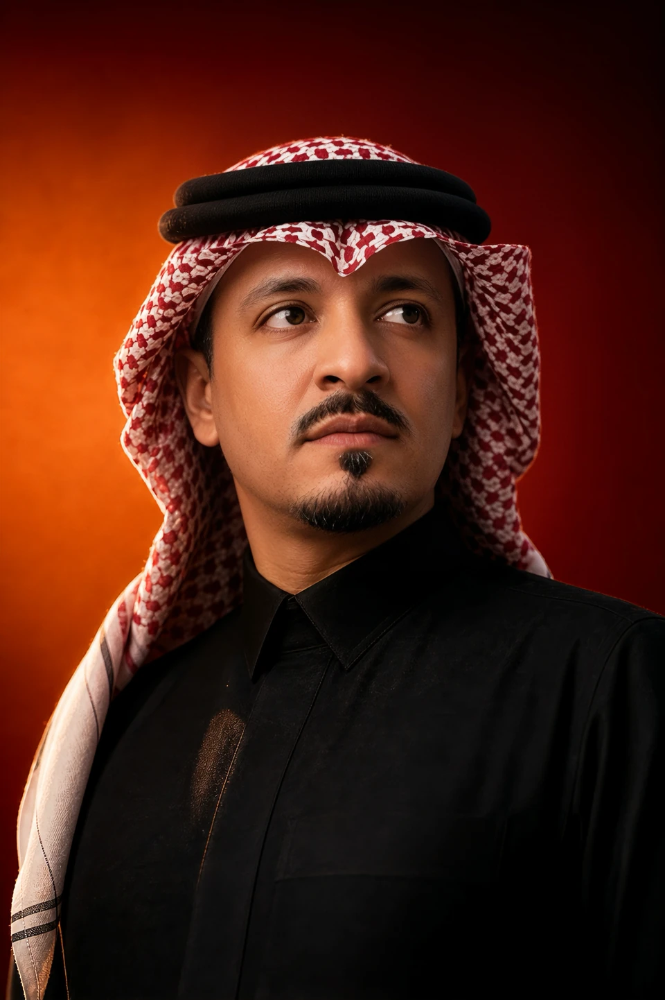

Dr. Waleed Alshalan
CEO and Co-Founder
Dr. Waleed Alshalan is the CEO and Co-Founder of Leadra. An academic, researcher, and expert in information security, with extensive experience spanning both academia and industry across leadership, technology, and higher & executive education. He combines academic depth with executive experience to develop leaders and create lasting professional impact.